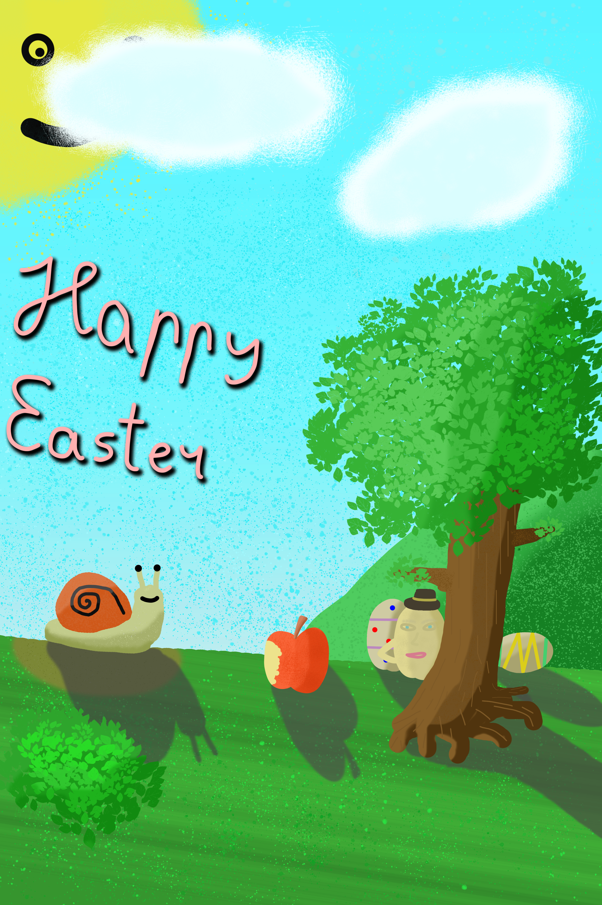

Digitaalkunst on maalingud, joonised, logotüübid mis olid tehtud kasutades digitaalseid
tööriistu. Nendeks tööriistadeks on tavaliselt:
Siin on mõned tööd, mida me tegime seoses digitaalkunstiga
Ülesandeks oli teha lihavõttekaarti kasutades Adobe Photoshop'i. Tööriistadest kasutasin peamiselt:

Ülesandeks oli joonistada ümber tegelast pildist ning panna teda mingi teisse olukorda kasutades
Adobe Photoshop'i